Nxユニークアイテム 錬成・解放
材料手順
まとめ
未実装アイテム
材料
| 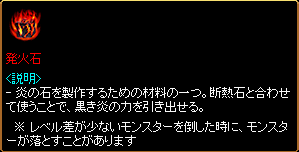 |
本体Lv-100以上のモンスターからドロップ |
| 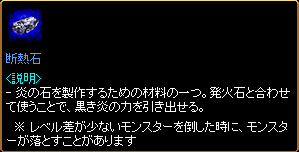 |
本体Lv-100以上のモンスターからドロップ |
| 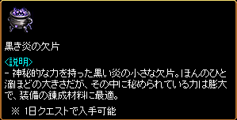 |
1日クエスト報酬 |
| 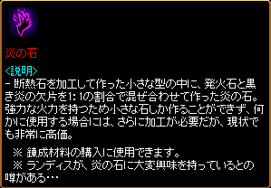 |
鍛冶屋のハンマー/匠のハンマー/氷のハンマー より作成 または 地下界からの使者クエスト報酬 |
| 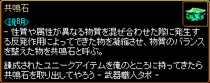 |
古都ブルンネンシュティグ 武器職人タポ（100.51）よりNxユニークアイテム分解 または 古都ブルンネンシュティグ ランディス（110.58）より黒き炎の欠片500個と交換 |
| 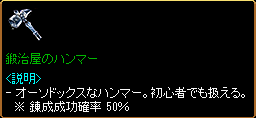 |
古都ブルンネンシュティグ 武器職人サナ（98.53） または漆黒の城 リュラン（264.190）より作成 発火石 60個 断熱石 60個 神秘の石 6個 結晶石 3個 黒き炎の欠片 20個 100万G |
| 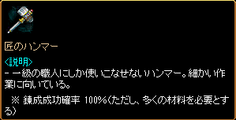 |
古都ブルンネンシュティグ 武器職人サナ（98.53） または漆黒の城 リュラン（264.190）より作成 発火石 100個 断熱石 100個 神秘の石 10個 結晶石 5個 黒き炎の欠片 50個 100万G |
| 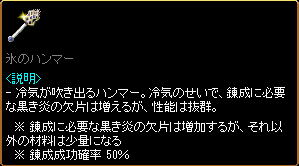 |
古都ブルンネンシュティグ 武器職人サナ（98.53） または漆黒の城 リュラン（264.190）より作成 発火石 30個 断熱石 30個 神秘の石 3個 結晶石 2個 黒き炎の欠片 50個 1000万G |
| 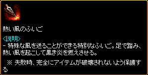 |
古都ブルンネンシュティグ 武器職人サナ（98.53） または漆黒の城 リュラン（264.190）より作成 炎の石 3個 100万G 錬成失敗時のアイテム完全破壊を防止 |
| 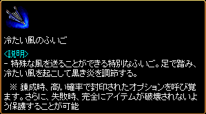 |
古都ブルンネンシュティグ 武器職人サナ（98.53） または漆黒の城 リュラン（264.190）より作成 炎の石 4個 共鳴石 1個 100万G 錬成失敗時のアイテム完全破壊を防止 封印されたオプションの付加確率が上昇 |
| 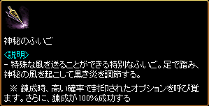 |
古都ブルンネンシュティグ 武器職人サナ（98.53） または漆黒の城 リュラン（264.190）より作成 炎の石 8個 共鳴石 2個 100万G 錬成の成功確率100％ 封印されたオプションの付加確率が上昇 |
| 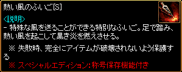 |
錬成失敗時のアイテム完全破壊を防止 スーパーユニークアイテムのオプション引継ぎが可能 |
| 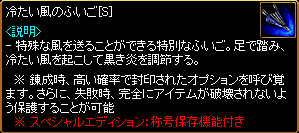 |
錬成失敗時のアイテム完全破壊を防止 封印されたオプションの付加確率が上昇 スーパーユニークアイテムのオプション引継ぎが可能 |
| 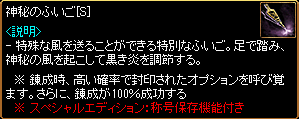 |
錬成の成功確率100％ 封印されたオプションの付加確率が上昇 スーパーユニークアイテムのオプション引継ぎが可能 |
| 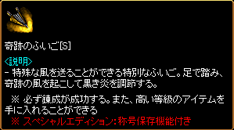 |
錬成の成功確率100％ 高確率で封印されたオプション4個が付加 スーパーユニークアイテムのオプション引継ぎが可能 |
| 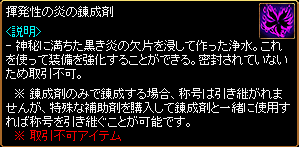 |
古都ブルンネンシュティグ 武器職人サナ（98.53） または漆黒の城 リュラン（264.190）より交換 炎の石 10個 |
| 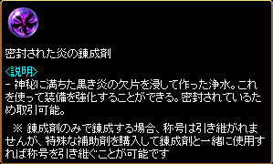 |
取引可能な錬成剤 |
| 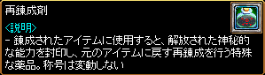 |
古都ブルンネンシュティグ 武器職人サナ（98.53） または漆黒の城 リュラン（264.190）より交換 炎の石 1個 または 金のインゴット 50本 |
| 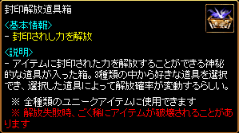 |
古都ブルンネンシュティグ 武器職人サナ（98.53） または漆黒の城 リュラン（264.190）より交換 炎の石 5個 |
| 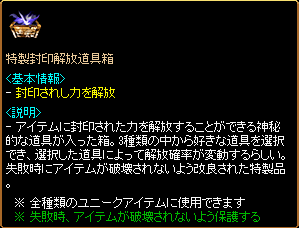 | 古都ブルンネンシュティグ 武器職人サナ（98.53） または漆黒の城 リュラン（264.190）より交換 封印解放道具箱 1個 炎の石 5個 共鳴石 3個 100万G 解放失敗時のアイテム完全破壊を防止 |
手順
 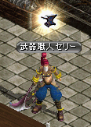 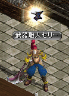 |
古都ブルンネンシュティグ 武器職人サナ（98.53）または、冒険家協会ブルンネンシュティグ本部 武器職人セリー（64.21）にて、錬成を行うことができる。 |
 |
? 錬成を依頼する を選択 |
| 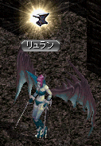 |
漆黒の城 リュラン（264.190）でも、錬成を行うことができる。 |
| 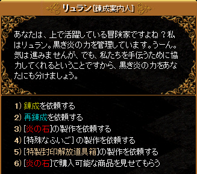 |
内容は武器職人サナと同様 |
| 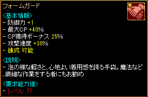 |
素材はフォームガード 錬成できるアイテムには基本情報欄に 「錬成 可能」の表示がある。 |
| 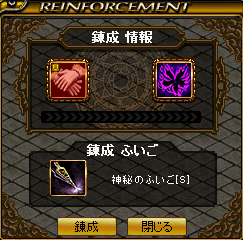 |
フォームガード 揮発性の炎の錬成剤 神秘のふいご[S] をセット ふいごなしでも錬成はできるが、錬成失敗時にアイテムが完全破壊される場合がある。 ふいご[S]を使用しない場合、スーパーユニークアイテムのオプションは消滅する。 |
| 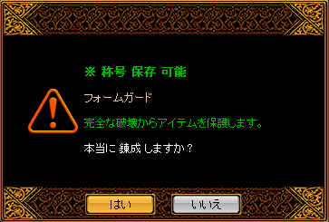 |
神秘のふいご[S]を使用しているため、 錬成の成功確率100％。 スーパーユニークアイテムのオプションも引継がれる。 |
| 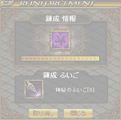 |
錬成開始 |
| 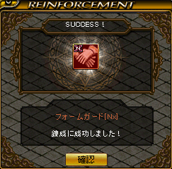 |
錬成成功 |
| 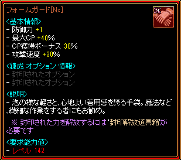 |
錬成に成功するとNxユニークとなり、 基本能力が上昇 ユニークアイテムは要求Lvが上昇 （DXユニークは変わらない） 補正値が変動 封印されたオプションがランダムで 0〜4個付加される。 フォームガード[Nx]の場合、 CP獲得ボーナス 25％ → 30％ 要求Lv 71 → 142 |
| 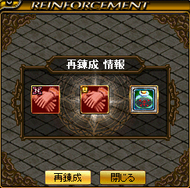 |
封印されたオプションが2個しか付加されなかったため、再錬成を行う。 武器職人サナまたはリュランに再錬成を依頼 フォームガード[Nx] 再錬成剤 をセット |
| 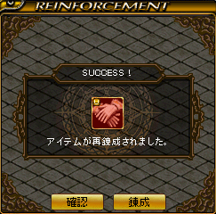 |
再錬成は必ず成功 |
| 再錬成すると錬成可能なユニークアイテムに戻り、補正値が変動。 スーパーユニークアイテムのオプションは変化なし。 |
|
| 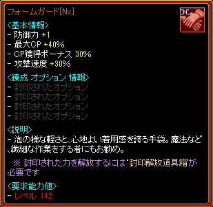 |
錬成・再錬成を繰り返して、 封印されたオプション4個が付加した Nxユニークが完成。 |
| 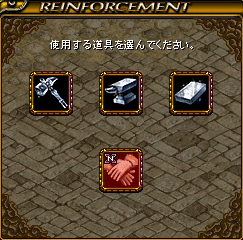 |
特製封印解放道具箱を使用して、 封印されたオプションを解放する。 解放はどこでも使用可能。 |
| 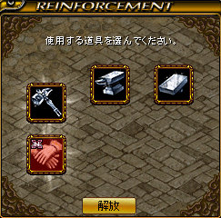 |
氷のハンマー/氷の鉄床/氷の砥石より1個を選択。 それぞれ解放の成功確率が異なるが、詳細な違いは不明。 |
| 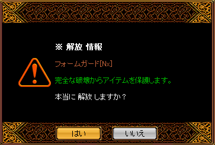 |
特製封印解放道具箱を使用しているため、 解放失敗時のアイテム完全破壊を防止。 |
| 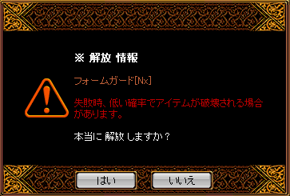 |
封印解放道具箱を使用した場合は、解放失敗時にアイテムが完全破壊される場合がある。 |
| 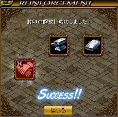 |
解放成功 |
| 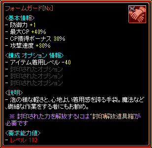 |
1個目の封印されたオプションが解放。 封印されたオプションは上から1個ずつしか解放できない。 フォームガード[Nx]の場合、 要求Lv 142 - 40 = 102 |
| 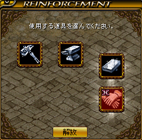 |
解放2回目 |
| 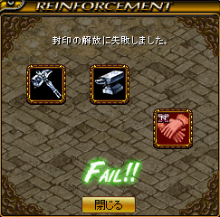 |
解放失敗 |
| 解放に失敗すると、錬成オプションは全て初期化され、封印されたオプションに戻る。 封印されたオプションを4個全て解放したNxユニークを作るには、4回連続で解放に成功しなければならない。 |
まとめ
・Nxユニークアイテムはモンスターからもドロップ。
・ドロップしたNxユニークアイテムには、封印されたオプションがランダムで0〜4個付加されている。解放は別途必要。
・NxDXユニークはドロップしないため、錬成で作成。
（DropLvの設定ミスと思われる以下のNxDXユニークのみドロップする可能性がある）
カルボナーラツイスト[Nx] <DropLv/係数>95/1000
毒性クラゲ[Nx] <DropLv/係数>295/1000
黒魔術の呪い[Nx] <DropLv/係数>341/1000
カタリナ卿の威厳[Nx] <DropLv/係数>372/150
ゴッドマザー[Nx] <DropLv/係数>316/800
ブラックラベル[Nx] <DropLv/係数>372/150
・錬成可能なユニークアイテムは、通常のユニーク/インフィニティ武器8〜10/賭博師武器など「錬成 可能」と表示されているアイテム。
・錬成不可能なユニークアイテムは、インフィニティ武器1〜7/朱洛星シリーズ/クロネの指輪/ニケの靴/ジェーソンの革の帽子/ハーソンのバンダナ/弾/矢/盾など。
・錬成するとユニークアイテムは要求Lvが上昇、DXユニークは変わらない。
・錬成・再錬成時には、補正値が変動。
（例. 女神の息吹 異常状態抵抗 最高補正45％→錬成・再錬成後 20~45％に変動）
・Nxユニークアイテムは、エンチャント/神秘鏡/魔力抽出機/異次元が可能。鏡の魔法書は使用不可。
・錬成したNxインフィニティ武器は強化不可。
・錬成したNx爪は闘士も装備可能。
未実装アイテム
※実装時に仕様変更される可能性もありますので、予めご了承下さい。
| 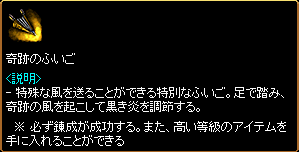 |
未実装 錬成の成功確率100％ 高確率で封印されたオプション4個が付加 |
| 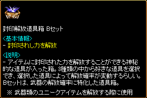 |
未実装 武器専用の封印解放道具箱 解放の成功確率上昇 |
| 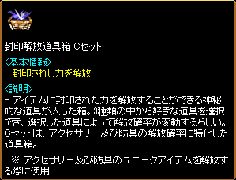 |
未実装 防具専用の封印解放道具箱 解放の成功確率上昇 |
| 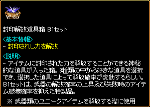 |
未実装 武器専用の封印解放道具箱 解放の成功確率上昇 解放失敗時のアイテム完全破壊確率低下 |
| 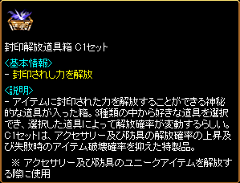 | 未実装 防具専用の封印解放道具箱 解放の成功確率上昇 解放失敗時のアイテム完全破壊確率低下 |